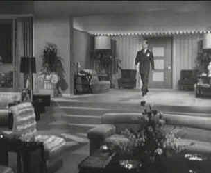

|
Impact/C+,B |
|
Image/1948/117m/FS
1.33/BW |
Impact
starts out as a solid film noir along the lines of Double
Indemnity or The Postman Always Rings
Twice. Wealthy executive
Walter Williams is a tough guy when it comes to facing down his
board of directors, but is a positive softy caving in to every
desire of his beautiful wife. Madly in love, Williams dotes on
Irene, but she has other ideas.
While Walter pushes his company to financial
success, Irene is engaged in a hot and heavy relationship with
an unsavory lover. There's never any explanation for her
dissatisfaction with Walter. It must be pure noir
malice. Walter hasn't got a clue though, and needs to get
hit over the head to catch on. The movie might end on a
precipitous note except for an accident of terrain, but it does
take some rather drastic turns other those hairpins on the road
to Denver.
After Walter discovers his wife's treachery,
he disappears into the employ of a beautiful small town garage
owner. The movie's tone changes with surprising ease. It's like
Walter wandered right of this noir onto an Andy Hardy set. It's
revenge and not romance that's on his mind, but beautiful Marsha
is simply too great a temptation.
 |
| Nice
apartment Walter. And on a "B" budget, too.
©Image |
The surprise turns in the last third of the movie are even more
difficult to swallow. Marsha plays girl detective alongside
veteran Lieutenant Quincy to help find the witness who can free
her man. The only real shadows in this noir wannabe are cast on
the integrity of the screenplay.
The film may not be great, but it works
a lot better than it sounds because of the mostly appealing performances.
Brian Donlevy, often a heavy, is likeable as fall guy Walter. I
think I like Donlevy most in his good guy roles, as a matter of
fact. Try catching him in The
Great McGinty,
a smashingly good film. Ella Raines, fresh-faced with a
silky voice that can make monkey wrench sound sexy, gives a good
girl detective performance, but of the ladies, Helen Walker has
the juicier part. There's nothing like a woman two and three
timing a man to inspire a performance. Charles Coburn is
definitely a refugee from the land of Preston
Sturges. Whatever was he doing playing Lieutenant
Quincy?
There are
several significant full length scratches on the films elements
that last for a good fifteen minutes. Stay with me here. The
transfer is consistently sharp and aside from the scratches, is excellent.
An attempt could have been made to cover up the scratches
through the use of digital paint box techniques, but this would
likely have caused a significant drop-off in overall clarity.
Given the choice, I vote for the sharp picture delivered.
Contrast is in good balance throughout and the picture is
lively. The mono sound does a capable job with no hiss or
audible distortion.
|


Fred Astaire and Cyd Charisse
bring Silk Stockings to life, a remake of Ninotchka,
one of many films successfully turned into musicals by the Hollywood
dream factory. Read all about remakes into musicals by clicking on
the divine dancers.


Looking
for a fix of irreverent flick
dissection. Check out The
Big Combo where four guys rave
and rant about movies.
 Direct
from the corridors of the Home
Theater Forum, Home Theater Talk is
the newest place on the Net to
discuss everything home theater.
Friendly atmosphere and
knowledgeable folks are the secret
ingredients. Direct
from the corridors of the Home
Theater Forum, Home Theater Talk is
the newest place on the Net to
discuss everything home theater.
Friendly atmosphere and
knowledgeable folks are the secret
ingredients.
DVD
Gold
Specializing in Region 2 films, DVD spins gold about the latest
DVD releases in England and elsewhere. Check out the new site.
 The
online site for Film
Comment Magazine includes all the information you need to
know about cinematic events sponsored by the Film Society of Lincoln
Center. The
online site for Film
Comment Magazine includes all the information you need to
know about cinematic events sponsored by the Film Society of Lincoln
Center.
Home
Theater Reference Reviewing System
When you read a DVD review it's of utmost importance to know
what equipment is being used to evaluate quality. Click on the
projector to find out more.

The
Movie Poster Archive include extensive poster images from the
films of stars like Susan Hayward, Kirk Douglas, Katharine
Hepburn and many more. This month's featured star is Kirk
Douglas.
|